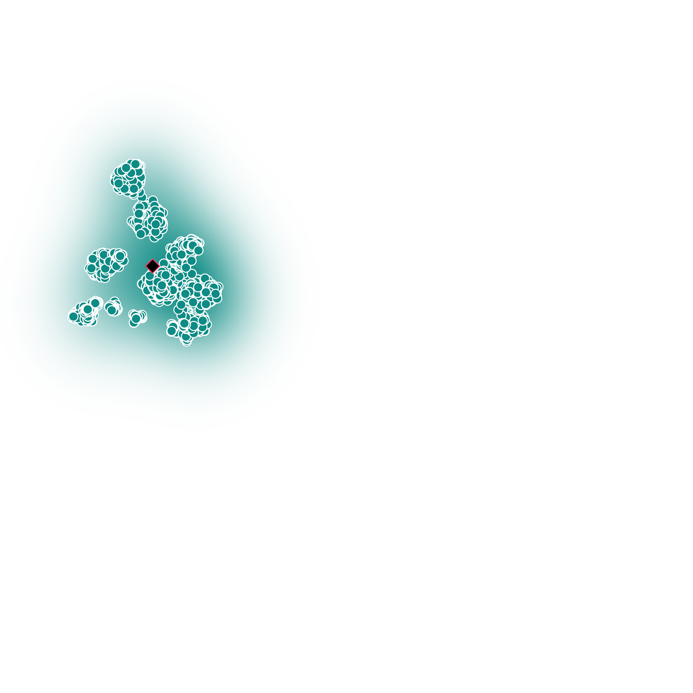

Introduction
We introduce Daisy-TTS, and emotional text-to-speech design, grounded on the structural model of emotions
Through learning and decomposing the learned embeddings, Daisy-TTS capable of simulating:
- Primary Emotions, as learned from the training samples, e.g. joy, sadness, anger.
- Secondary Emotions, as a mixture of primary emotions, e.g. envy = sadness + anger.
- Intensity-level, by scaling the emotion embedding, e.g. rage = 2 * anger.
- Emotions Polarity, by negating the emotion embedding, e.g. sadness = - joy.

(Left) Structural Model of Emotions. (Right) Emotionally-separable prosody embeddings learned by Daisy-TTS.
Simulating Emotions
Below we can listen to emotional speech simulated by Daisy-TTS, with algorithm described in Section 3 of the paper. We can simulate a primary emotion, or secondary emotion by mixing the primary ones, and simulate its intensity and polarity.
|

|
üíê Baseline |